🎚️
PRESETS
Clean, crunch, drive, solo e sons para diferentes aplicações.
Presets prontos para tocar — e, para quem quer ir além, capturas AM3 e AM4, IRs, pedais e timbres inspirados em grandes guitarristas.
Acesso digital • Instalação simples • Pagamento único

Você comprou uma Tank-G cheia de possibilidades. Só que, entre ganho, equalização, caixa, IR, delay e reverb, é fácil passar mais tempo mexendo do que tocando.
A Verdinha foi criada para encurtar esse caminho.

Clean, crunch, drive, solo e sons para diferentes aplicações.
Bibliotecas de capturas em gerações AM3 e AM4, com referências de amplificadores e equipamentos clássicos e modernos.
Gabinetes e falantes selecionados para ampliar as possibilidades sonoras.
Presets especiais inspirados em referências como Kiko e Eddie Van Halen.
O Básico entrega os presets. O Guitarrista Profissional libera o universo completo da coleção.
Para quem quer praticidade e bons presets prontos para usar.
Para quem quer transformar a Tank-G em um verdadeiro arsenal de timbres.
Em vez de uma simples lista, você enxerga rapidamente o universo de timbres que inspira as capturas AM3 e AM4 da coleção.
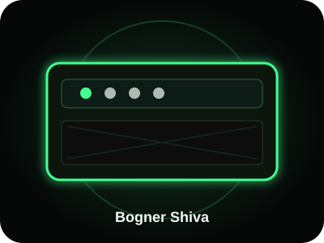
BOGNER SHIVACapturas AM3 / AM4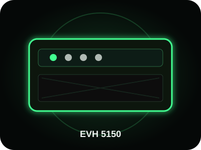
EVH 5150Capturas AM3 / AM4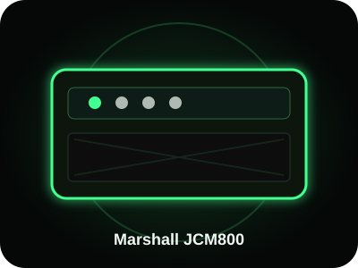
MARSHALL JCM800Capturas AM3 / AM4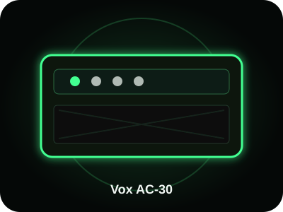
VOX AC-30Capturas AM3 / AM4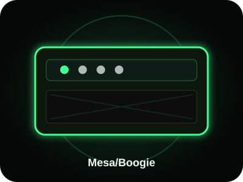
MESA / BOOGIECapturas AM3 / AM4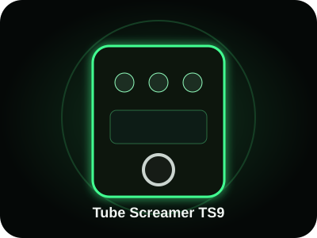
TS9Referência de drive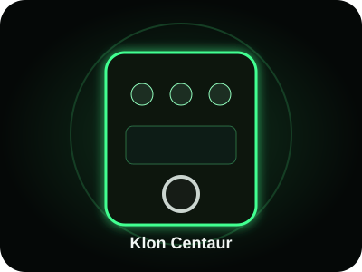
KLONReferência de overdrive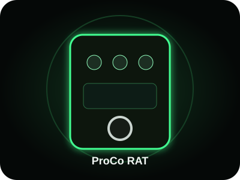
RATReferência de distorção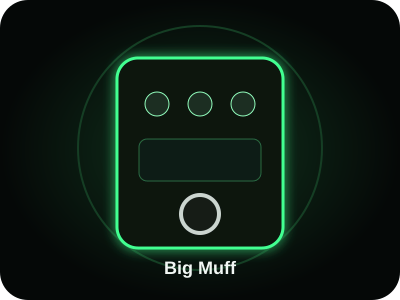
BIG MUFFReferência de fuzz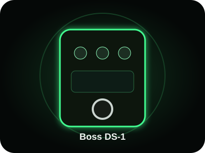
DS-1Referência de distorção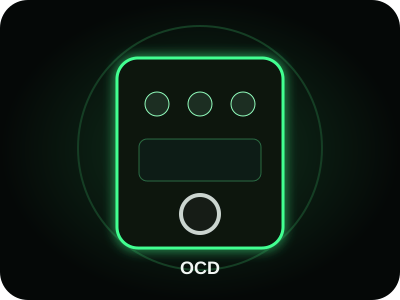
OCDReferência de overdriveAs ilustrações e nomes servem apenas como referências sonoras e de equipamento. Trucker Cap Tone Lab não é afiliada, patrocinada ou endossada pelas respectivas marcas ou artistas.
A coleção de guitarristas famosos foi separada de propósito: ela é o conteúdo premium para quem quer ir além dos presets essenciais.
| Conteúdo | Básico R$27 | Profissional R$67 |
|---|---|---|
| Presets Tank-G | ✓ | ✓ |
| Clean / Crunch / Drive / Solo | ✓ | ✓ |
| Capturas AM3 + AM4 | — | ✓ |
| Capturas de pedais | — | ✓ |
| IRs selecionados | — | ✓ |
| Guitarristas famosos | — | ✓ |
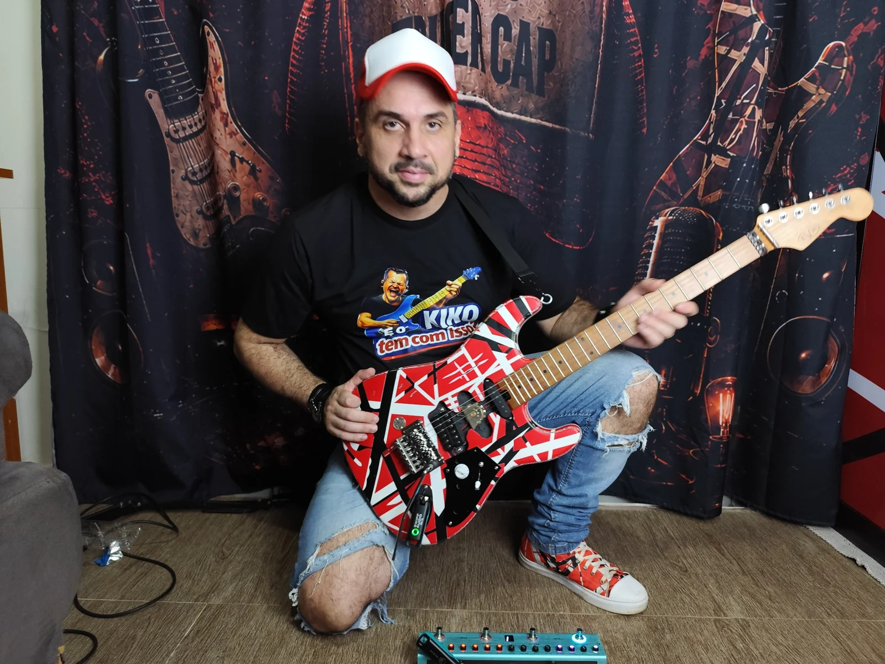
Samuel de Azevedo, guitarrista e criador do Trucker Cap Tone Lab, desenvolve e organiza a coleção pensando em uso musical real: estudo, gravação, conteúdo e palco.
A proposta não é encher sua Tank-G de arquivos. É entregar pontos de partida úteis para você chegar mais rápido ao timbre e voltar para o que importa: tocar.
Não. A proposta é justamente entregar pontos de partida prontos, que você pode usar e ajustar conforme sua guitarra, captadores e sistema de áudio.
Sim. Pequenos ajustes são naturais e recomendados porque guitarra, captadores, fones, monitores e caixas influenciam o resultado.
Não. O conteúdo é digital.
Não. A coleção de guitarristas famosos faz parte do plano Guitarrista Profissional.
Sim. A oferta Profissional reúne as bibliotecas de capturas AM3 e AM4 definidas para esta coleção, além dos IRs, presets e conteúdos premium.
Sim. Esta página e esta coleção são dedicadas à Tank-G.
Produto digital. Trucker Cap Tone Lab.